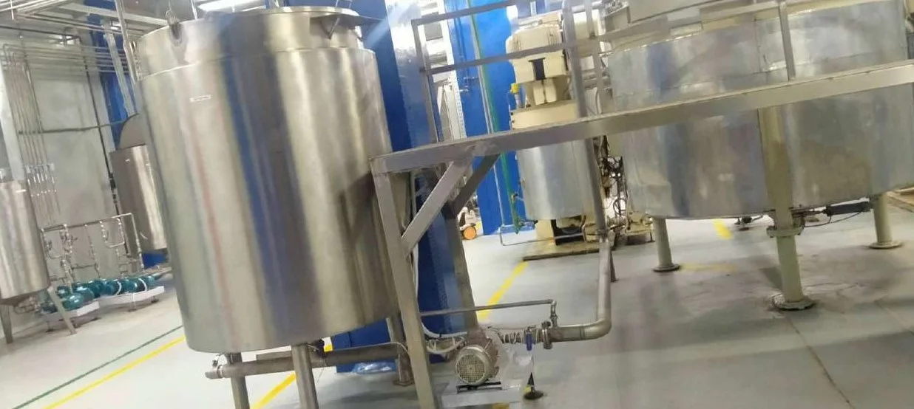
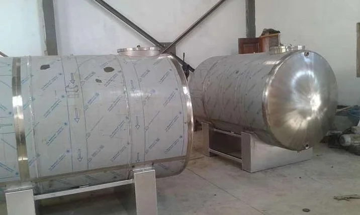

التنكات والأوعية · 8 صور
تصنيع الخزانات وأوعية التشغيل من الاستانلس ستيل
خزانات أسطوانية عملاقة، أوعية بجاكيت، تنكات متحركة بقاع مخروطي، خزانات أفقية، ووحدات مركبة داخل المصانع.
عرض الأرشيفنقدم خدمات تصنيع وتشكيل المعادن ومعدات الاستانلس ستيل والحلول الهندسية الصناعية المتكاملة وفقاً لمتطلبات التشغيل.

01 / من أرشيف مشروعاتنااستكشف مجموعات المعدات الصناعية.

تنكات IBC للنقل، تنكات أسطوانية ورأسية، تنكات بقاع لا مركزي، حاويات مساحيق، وتنكات كيماويات FRP.
استكشف المعدات ↖
تنكات خلط السوائل، تنكات تسخين كهربائي بجاكيت، تنكات قلاب ميكانيكي ونيوماتيك، وخلاطات كيماويات.
استكشف المعدات ↖
تنكات خلط صحية، غلايات طهي بالبخار، خلاطات كوكير، أحواض تجبين، وماكينات مستحضرات التجميل.
استكشف المعدات ↖
مغذيات حلزونية دقيقة، نواقل حلزونية أفقية ومائلة، تصميمات أنبوبية وU-trough، ونواقل بدون محور.
استكشف المعدات ↖
أنظمة التغذية السائلة الأوتوماتيكية وطلمباتها، وكسارات ومفارم ثنائية المحور وخطوط استعادة المواد.
استكشف المعدات ↖توثيق فوتوغرافي حقيقي من داخل ورش ستيل تكنولوجي ومنشآت التشغيل، مرتب حسب نوع المعدة والعمل الهندسي.
خزانات أسطوانية عملاقة، أوعية بجاكيت، تنكات متحركة بقاع مخروطي، خزانات أفقية، ووحدات مركبة داخل المصانع.
عرض الأرشيفسيور ناقلة مزودة بمحركات وجيربوكس، وحدات فرز نيوماتيك، درافيل مثقبة وتروس ثقيلة.
عرض الأرشيف
مقاطع مواسير استانلس مصقولة بفلانشات وفتحات جانبية، وملفات أنابيب حلزونية مصنعة خارج الورشة.
عرض الأرشيفشركات مختارة من قائمة المراجع الصناعية للشركة في أربعة قطاعات.
نستله (Nestlé)
هاينز (Heinz)
ماربيلا للصناعات الغذائية (Marbella)
تكنو تيست (Techno Taste)
البوادي للصناعات الغذائية (Al Bawadi)
سيديكو للأدوية (Sedico Pharmaceuticals)
أكتوبر فارما (October Pharma)
العربية لتغليف الأدوية (Arab Packaging)
هنكل (Henkel)
إيفر جرو للأسمدة المتخصصة (EverGrow)
العالمية للدهانات (International Paints)
مجموعة طلعت مصطفى (TMG)
إمكو للمشروعات الهندسية (EMCO)

ندعم توطين المعدات وتصنيع قطع الغيار من خلال القياسات الهندسية والمراجعة الفنية والتصنيع المحلي.